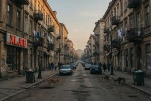
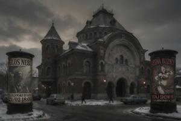
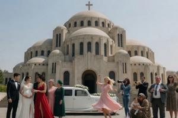
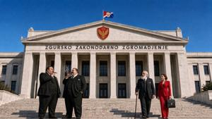

Третий округ Вроновицы
{kind=link}

Третий округ (Treczi okrug) Вроновицы лежит к северу от реки, в згурской части города.
Исторический обзор
Главная ось округа — Славянский проспект (Slavjanska jezda): в разное время он назывался проспектом королевы Елизаветы, затем, при венгерской оккупации, проспектом Хорти, при коммунистах — проспектом Ленина, с 1960 года — проспектом генералиссимуса Гоубки, а в 1990 году ему вернули нынешнее название. Он идёт на северо-запад в направлении Вены и при Габсбургах несколько уступал по престижу проспекту Франца Иосифа. Здесь селились не дворяне и крупные капиталисты, как во Втором округе, а люди свободных профессий, мелкие чиновники, небогатые купцы и интеллигенция. Это придавало округу особую политическую окраску: он был настроен более реформистски, чем Второй, более прославянски и более резко антивенгерски. На плебисците 1920 года около восьмидесяти процентов местного населения проголосовали за независимость.
Та же среда в 1930-е годы составила ядро электората дроганистского движения. При венгерской оккупации монархически настроенное население округа подверглось систематическим репрессиям — арестам, конфискациям, принудительному труду. После войны уцелевшие естественным образом склонились к коммунистам: это была единственная сила, несомненно враждебная венгерской реставрации. Коммунистическое правительство почти не изменило социальный состав округа: если Второй округ заново заселили партийными лоялистами, то Третий на протяжении всех четырёх десятилетий социализма сохранял свой профессионально-интеллигентский характер.
Гражданская война резко оборвала эту преемственность. В 1992 году в округ хлынули рабочие-згурцы, бежавшие с правого берега; деглянские жители покинули его под тем же давлением, что действовало повсюду в северной части города. Сейчас округ почти исключительно згурский.
Топография
{kind=link}

Начиная от Славянской площади (Slavjanski Trug) у Мостового кольца:
Славянский Театр (Slavjansko Divadlo), открытый в 1876 году, построил варшавский архитектор Владислав Горчинский в смешанном русско-неовизантийском стиле — редком для этих мест. Габсбургская цензура не менее четырёх раз приостанавливала его лицензию за постановки, признанные политически неблагонадёжными; каждый такой запрет вызывал демонстрации, о которых либеральная пресса писала куда подробнее, чем о самих крамольных спектаклях. Здание конфисковывали дважды: один раз в ходе мадьяризаторской кампании 1896 года, второй — при венгерской оккупации 1940–1944 годов. Оба раза театр закрывали, а труппу разгоняли силой. Из этих вынужденных перерывов сложилась легенда о театре-герое, театре-политическом мученике, и эта легенда пережила спектакли, которые её породили. С 1990 года театр служит главным культурным учреждением Згурской Республики и ставит спектакли исключительно на згурском языке.
Муниципальный театр (Kostursko Divadlo) — один из трёх городских театров начала XX века — резко отличался от соседей по характеру. Королевский театр давал представления только на немецком и венгерском, Славянский — только на паннонском, а Муниципальный представлял на всех трёх языках и демонстративно держался вне политики. В начале XX века им руководил Леонард Баумгартен, отец королевы Адели. При социализме театр включили в государственную театральную систему. С 1995 года он, как и Славянский театр, находится в культурном ведении Згурской Республики и с трудом выживает на остаточное муниципальное финансирование при сокращающейся публике.
Великоморавская площадь (Velikomoravski Trug) — главная парадная площадь округа — лежит перед собором святых Кирилла и Мефодия. Её топонимическая история пестра: в 1945 году её переименовали в площадь Малиновского, в 1956-м — в площадь Тито, в 1966-м — в площадь Мао Цзэдуна, а в 1990 году вернули изначальное название.
{kind=link}

Собор святых Кирилла и Мефодия, освящённый в 1932 году, задумывался как национальная святыня, призванная затмить династический собор Святого Тибора в крепости. Архитектор Иштван Кочар соединил приземистые византийские купола с орнаментальными мотивами ар-деко и конструктивной ясностью итальянского рационализма. Низкие силуэты куполов выглядели непривычно для современников. В народе за ними закрепилось прозвище «Этелькины сиськи» (Etelkiny cicki), по имени Адель Гловач (будущей королевы Адели), известной своей субтильной фигурой; прозвище пережило все смены власти. В 1944 году собор пострадал от артиллерийского огня, а в начале 1950-х был отреставрирован. Статус охраняемого памятника культуры не позволил закрыть его на протяжении всего социалистического периода.
Площадь Легиона (Trug Legyi), названная в честь Паннонского легиона, — местоположение Законодательного собрания и других правительственных зданий. При коммунистах её переименовали в площадь Баха, Шваха и Карачонь (Trug Baxa, Szvaxa i Karaczoni) — в честь трёх вождей большевистского восстания 1919 года, подавленного Паннонским легионом. Эрвин Бах, Рафаэль Швах и Эржебет Карачонь состояли в Третьем Интернационале и провозгласили Паннонскую Советскую Республику, но проиграли легионерам короткую гражданскую войну и в том же году были расстреляны. Гоубка объявил их героическими революционными мучениками и воздвиг памятник, заменивший прежний монумент легионерам. В 1990 году площади вернули изначальное название, но памятник коммунистической эпохи остался на месте.
{kind=link}

Законодательное собрание (Zakonodarno Zgromadjenje), достроенное в 1935 году в аскетичном рационалистском стиле, было главным архитектурным манифестом суверенных амбиций Первой республики. При Дрогане I и коммунистах здесь заседали декоративные безвластные парламенты; с 1992 года здание служит парламентом Згурской Республики. В межвоенных министерских зданиях на площади Легиона теперь размещаются министерства Згурской Республики — финансов, внутренних дел и иностранных дел.
Новый университет (Novy Unyversytet) занимает квартал между Славянским проспектом, Украинской улицей (Ukrainska ulica), Русской улицей (Ruska ulica) и Университетским парком (Unyversytecka Zagroda). Его основали в 1876 году как Паннонский педагогический институт либеральные профессора-панслависты, недовольные латинской программой и клерикальным консерватизмом Старого университета. Преподавание велось на паннонском языке, и институт быстро — практически с самого начала — стал интеллектуальным центром паннонского национализма; руководство Первой республики почти целиком вышло из числа его выпускников. При Первой республике институт получил статус университета и оттеснил Старый университет с позиции главного национального учебного заведения. Коммунисты сохранили за ним это первенство, переименовав его в честь Гоубки. С 1992 года это единственный действующий университет Згурской Республики, и его студенты целиком набираются из згурской зоны.
На северной окраине округа доминирует спорткомплекс «Сокол», построенный вокруг бывшего стадиона короля Дрогана (Graliscze Krola Drogana) 1937 года постройки. Коммунистическое правительство сохранило и сам стадион, и название «Сокол»: панславянская гимнастическая символика вполне устроила новых хозяев. Комплекс — домашняя арена футбольного клуба «Сокол Вроновица», чьи матчи собирают публику стабильнее других публичных мероприятий Згурской Республики.
Категории: Вроновица, Округа Вроновицы